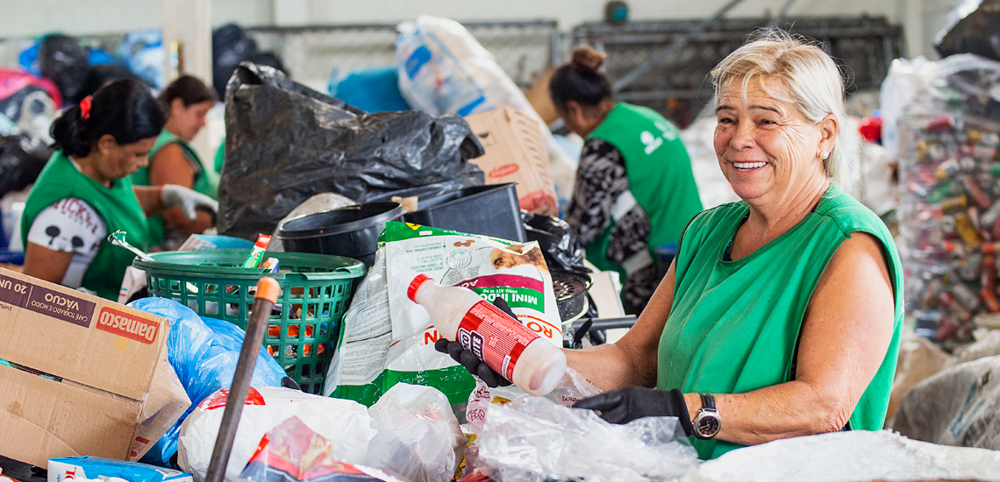
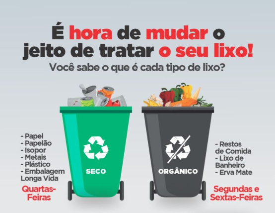

Junte-se ao movimento por um planeta mais limpo.
Pequenas ações, grandes transformações. Comece a reciclar hoje!
Faça PartePor que Reciclar?

Economia de Recursos
Reciclar ajuda a poupar matérias-primas, água e energia, diminuindo a necessidade de extração de novos recursos naturais.

Menos Poluição
Reduz a poluição do ar, da água e do solo, além de diminuir o volume de lixo enviado para aterros sanitários.

Gera Empregos
A indústria da reciclagem movimenta a economia e gera renda para milhares de famílias que trabalham como catadores e em cooperativas.Como Separar Corretamente?

Separar o lixo é mais fácil do que parece. Basicamente, divida entre Seco e Orgânico.
- Lixo Seco (Reciclável): Papéis, plásticos, metais e vidros. Lembre-se de limpá-los para remover o excesso de resíduos.
- Lixo Orgânico (Rejeito): Restos de comida, cascas de frutas, pó de café e guardanapos usados.